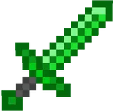

A Espada de Esmeralda é uma opção intermediária no início da aventura. Apesar de não ter o poder absurdo das espadas lendárias, é fácil de conseguir e oferece um bom dano para enfrentar mobs comuns. Ideal para quem quer começar forte antes de partir para desafios maiores.
